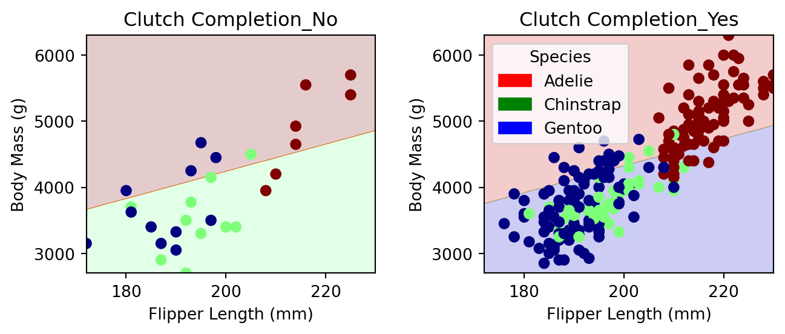

import pandas as pd
train_url = "https://raw.githubusercontent.com/PhilChodrow/ml-notes/main/data/palmer-penguins/train.csv"
train = pd.read_csv(train_url)Classifying Palmer Penguins
2024-02-22
The expectations for all blog posts apply!
The Palmer Penguins data set is a data set collected by Dr. Kristen Gorman and the Palmer Station, Antarctica LTER, a member of the Long Term Ecological Research Network. It was first published by Gorman, Williams, and Fraser (2014) and was nicely packaged and released for use in the data science community by Horst, Hill, and Gorman (2020). The data contains physiological measurements for a number of individuals from each of three species of penguin:

You can access the (training) data like this:
Here’s how the data looks:
train.head()| Unnamed: 0 | studyName | Sample Number | Species | Region | Island | Stage | Individual ID | Clutch Completion | Date Egg | Culmen Length (mm) | Culmen Depth (mm) | Flipper Length (mm) | Body Mass (g) | Sex | Delta 15 N (o/oo) | Delta 13 C (o/oo) | Comments | |
|---|---|---|---|---|---|---|---|---|---|---|---|---|---|---|---|---|---|---|
| 0 | 182 | PAL0809 | 31 | Chinstrap penguin (Pygoscelis antarctica) | Anvers | Dream | Adult, 1 Egg Stage | N63A1 | Yes | 11/24/08 | 40.9 | 16.6 | 187.0 | 3200.0 | FEMALE | 9.08458 | -24.54903 | NaN |
| 1 | 192 | PAL0809 | 41 | Chinstrap penguin (Pygoscelis antarctica) | Anvers | Dream | Adult, 1 Egg Stage | N74A1 | Yes | 11/24/08 | 49.0 | 19.5 | 210.0 | 3950.0 | MALE | 9.53262 | -24.66867 | NaN |
| 2 | 223 | PAL0708 | 4 | Gentoo penguin (Pygoscelis papua) | Anvers | Biscoe | Adult, 1 Egg Stage | N32A2 | Yes | 11/27/07 | 50.0 | 15.2 | 218.0 | 5700.0 | MALE | 8.25540 | -25.40075 | NaN |
| 3 | 234 | PAL0708 | 15 | Gentoo penguin (Pygoscelis papua) | Anvers | Biscoe | Adult, 1 Egg Stage | N38A1 | Yes | 12/3/07 | 45.8 | 14.6 | 210.0 | 4200.0 | FEMALE | 7.79958 | -25.62618 | NaN |
| 4 | 185 | PAL0809 | 34 | Chinstrap penguin (Pygoscelis antarctica) | Anvers | Dream | Adult, 1 Egg Stage | N65A2 | Yes | 11/24/08 | 51.0 | 18.8 | 203.0 | 4100.0 | MALE | 9.23196 | -24.17282 | NaN |
The “culmen” refers to a ridge on the bill of the penguin. 
Artwork by (allison_horst?)
Your Challenge
We are going to consider the problem of predicting the species of a penguin based on its measurements.
- Explore: Construct at least two interesting displayed figure (e.g. using seaborn) and at least one interesting displayed summary table (e.g. using
pandas.groupby().aggregate). Make sure to include a helpful discussion of both the figure and the table. Don’t just show the result: explain what you learned about the data from these products. - Model: Find three features of the data and a model trained on those features which achieves 100% testing accuracy. You must obtain your three features through a reproducible process. That is, you can’t just pick them: you need to code up some kind of search in order to obtain them.
- One feature must be qualitative (like
IslandorClutch Completion). - The other two features must be quantitative (like
Body Mass (g)orCulmen Depth (mm)).
- One feature must be qualitative (like
- Evaluate: Show the decision regions of your finished model, split out by the qualitative feature.
I’ve supplied code to help you with several parts of this task.
Resources and Hints
This Webpage Runs
If you run all the code on this assignment page in order, you’ll produce the result at the bottom of the page (possibly after installing some more packages in your ml-0451 Anaconda environment). So, one good way to approach this assignment is to take this code into a Jupyter notebook and start tweaking.
Data Preparation
You will need to prepare the qualitative columns in the data. Categorical feature columns like Sex and Island should be converted into so-called “one-hot encoded” 0-1 columns using the pd.get_dummies function. The label column Species should be coded differently, using a LabelEncoder. The following function handles this work for you.
from sklearn.preprocessing import LabelEncoder
le = LabelEncoder()
le.fit(train["Species"])
def prepare_data(df):
df = df.drop(["studyName", "Sample Number", "Individual ID", "Date Egg", "Comments", "Region"], axis = 1)
df = df[df["Sex"] != "."]
df = df.dropna()
y = le.transform(df["Species"])
df = df.drop(["Species"], axis = 1)
df = pd.get_dummies(df)
return df, y
X_train, y_train = prepare_data(train)Explore
Please create two interesting visualizations of the data, and one summary table (e.g. compute the average or median value of some features, by group). Your visualizations and table should:
- Include axis labels and legends.
- Help you draw conclusions about what features you are going to try using for your model.
- Be accompanied by discussion of what you learned and how you will use it in modeling. Most figures and tables are worth at least one short paragraph of discussion.
Choosing Features
This is where much of the work for this blog post lies. You need to choose 3 good features! One possibility is to use some of the tools described on this page. Another approach, which is ok to use on this data set, is exhaustive search of all the features contained in the data set. For this, the combinations function from the itertools package might be helpful.
USE CROSS-VALIDATION! This is your simplest way to guard against overfitting issues and get a good feeling for how your model might do on unseen data.
If you use the
Island feature, you are allowed to use all of the columns that correspond to Island.from itertools import combinations
# these are not actually all the columns: you'll
# need to add any of the other ones you want to search for
all_qual_cols = ["Clutch Completion", "Sex"]
all_quant_cols = ['Culmen Length (mm)', 'Culmen Depth (mm)', 'Flipper Length (mm)']
for qual in all_qual_cols:
qual_cols = [col for col in X_train.columns if qual in col ]
for pair in combinations(all_quant_cols, 2):
cols = qual_cols + list(pair)
print(cols)
# you could train models and score them here, keeping the list of
# columns for the model that has the best score. ['Clutch Completion_No', 'Clutch Completion_Yes', 'Culmen Length (mm)', 'Culmen Depth (mm)']
['Clutch Completion_No', 'Clutch Completion_Yes', 'Culmen Length (mm)', 'Flipper Length (mm)']
['Clutch Completion_No', 'Clutch Completion_Yes', 'Culmen Depth (mm)', 'Flipper Length (mm)']
['Sex_FEMALE', 'Sex_MALE', 'Culmen Length (mm)', 'Culmen Depth (mm)']
['Sex_FEMALE', 'Sex_MALE', 'Culmen Length (mm)', 'Flipper Length (mm)']
['Sex_FEMALE', 'Sex_MALE', 'Culmen Depth (mm)', 'Flipper Length (mm)']Model Choices
There are three species of penguin in the data. Most classifiers in scikit-learn will handle multi-way classification without issue. For example:
from sklearn.linear_model import LogisticRegression
# this counts as 3 features because the two Clutch Completion
# columns are transformations of a single original measurement.
# you should find a way to automatically select some better columns
# as suggested in the code block above
cols = ["Flipper Length (mm)", "Body Mass (g)", "Clutch Completion_No", "Clutch Completion_Yes"]
LR = LogisticRegression()
LR.fit(X_train[cols], y_train)
LR.score(X_train[cols], y_train)0.63671875Even though y_train contains three categories (labeled 0, 1, and 2), we’re able to fit a LogisticRegression() no problem.
Since scikit-learn makes it so easy to experiment, this blog post is a great opportunity to explore some out-of-the-box models. I’d suggest:
from sklearn.tree import DecisionTreeClassifier. This one has amax_depthparameter that controls the complexity of the model. Use cross-validation to find a good value of the parameter.from sklearn.ensemble import RandomForestClassifier. State-of-the-art before the rise of neural networks.from sklearn.svm import SVC. Another state-of-the-art algorithm before the rise of neural networks. Has a parametergammathat controls the complexity of the model. Again, use cross-validation to selectgamma. It’s important to letgammacover a wide range of values, e.g.gamma = 10**np.arange(-5, 5).
You can find a more thorough listing of models on this page.
Testing
To test your model, you should download the test data set and prepare it using the prepare_data function. You’ll need to make sure that you subset it using only the features you choose. Here’s code that does this:
test_url = "https://raw.githubusercontent.com/PhilChodrow/ml-notes/main/data/palmer-penguins/test.csv"
test = pd.read_csv(test_url)
X_test, y_test = prepare_data(test)
LR.score(X_test[cols], y_test)0.7794117647058824Plotting Decision Regions
Now we are going to plot a panel of decision regions for your classifier. You can use the plot_regions function defined below to plot your regions. This function assumes that your first two columns in X_train are quantitative and that the columns after that are one-hot qualitative columns.
from matplotlib import pyplot as plt
import numpy as npfrom matplotlib.patches import Patch
def plot_regions(model, X, y):
x0 = X[X.columns[0]]
x1 = X[X.columns[1]]
qual_features = X.columns[2:]
fig, axarr = plt.subplots(1, len(qual_features), figsize = (7, 3))
# create a grid
grid_x = np.linspace(x0.min(),x0.max(),501)
grid_y = np.linspace(x1.min(),x1.max(),501)
xx, yy = np.meshgrid(grid_x, grid_y)
XX = xx.ravel()
YY = yy.ravel()
for i in range(len(qual_features)):
XY = pd.DataFrame({
X.columns[0] : XX,
X.columns[1] : YY
})
for j in qual_features:
XY[j] = 0
XY[qual_features[i]] = 1
p = model.predict(XY)
p = p.reshape(xx.shape)
# use contour plot to visualize the predictions
axarr[i].contourf(xx, yy, p, cmap = "jet", alpha = 0.2, vmin = 0, vmax = 2)
ix = X[qual_features[i]] == 1
# plot the data
axarr[i].scatter(x0[ix], x1[ix], c = y[ix], cmap = "jet", vmin = 0, vmax = 2)
axarr[i].set(xlabel = X.columns[0],
ylabel = X.columns[1],
title = qual_features[i])
patches = []
for color, spec in zip(["red", "green", "blue"], ["Adelie", "Chinstrap", "Gentoo"]):
patches.append(Patch(color = color, label = spec))
plt.legend(title = "Species", handles = patches, loc = "best")
plt.tight_layout()Here it is in action, visualized on the training data with a logistic regression classifier. For your blog post, I recommend visualizing decision regions on both the training and test sets, with the classifier of your choice.
plot_regions(LR, X_train[cols], y_train)
Confusion Matrix
Please show a confusion matrix for your model, evaluated on the test set. Comment on the confusion matrix. Are certain types of errors more likely than others?
Explore!
Please feel encouraged to be creative in your choices of data visualization, predictive model, and algorithm to compute your features. I also like pictures of penguins. =)
Abstract and Discussion
Please add an introductory “abstract” section to your blog post describing the high-level aims of of your analysis and an overview of your findings. The abstract should be no more than one paragraph. Then, add a closing “discussion” section of your blog post in which you summarize your findings and describe what you learned from the process of completing this post.
Useful Resources
- An introduction to seaborn, a convenient package for data visualization with data frames.
- Data Manipulation with Pandas from the Python Data Science Handbook
- You might be interested in some of the explanations of how some other classifiers work, including decision trees and support vector machines, also from the Python Data Science Handbook.
© Phil Chodrow, 2024
References
Gorman, Kristen B., Tony D. Williams, and William R. Fraser. 2014. “Ecological Sexual Dimorphism and Environmental Variability Within a Community of Antarctic Penguins (Genus Pygoscelis).” Edited by André Chiaradia. PLoS ONE 9 (3): e90081. https://doi.org/10.1371/journal.pone.0090081.
Horst, Allison M, Alison Presmanes Hill, and Kristen B Gorman. 2020. “Allisonhorst/Palmerpenguins: V0.1.0.” Zenodo. https://doi.org/10.5281/ZENODO.3960218.